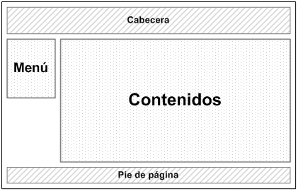
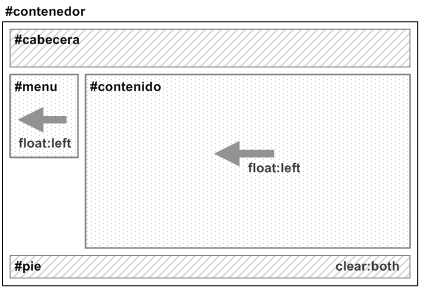

Diseño a 2 columnas con cabecera y pie de página
El objetivo de este diseño es definir una estructura de página con cabecera y pie, un menú lateral de navegación y una zona de contenidos.
La solución CSS se basa en el uso de la propiedad float para los elementos posicionados como el menú y los contenidos y el uso de la propiedad clear en el pie de página para evitar los solapamientos ocasionados por los elementos posicionados con float.
En los estilos CSS anteriores se ha optado por desplazar tanto el menú como los contenidos hacia la izquierda de la página (float: left). Sin embargo, en este caso también se podría desplazar el menú hacia la izquierda (float:left) y los contenidos hacia la derecha (float: right).
Si se indican la anchuras de los bloques que forman la página en porcentajes, el diseño final es dinámico. Para crear diseños de anchura fija, basta con establecer las anchuras de los bloques en píxel.
Alturas/Anchuras máximas y mínimas
Cuando se diseña la estructura de una página web, se debe tomar la decisión de optar por un diseño de anchura fija o un diseño cuya anchura se adapta a la anchura de la ventana del navegador.
Sin embargo, la mayoría de las veces sería conveniente una solución intermedia: que la anchura de la página sea variable y se adapte a la anchura de la ventana del navegador, pero respetando ciertos límites. En otras palabras, que la anchura de la página no sea tan pequeña como para que no se puedan mostrar correctamente los contenidos y tampoco sea tan ancha como para que las líneas de texto no puedan leerse cómodamente.
CSS define cuatro propiedades que permiten limitar la anchura y altura mínima y máxima de cualquier elemento de la página. Las propiedades son max-width, min-width, max-height y min-height.
Las propiedades que definen la altura y anchura máxima y mínima se pueden aplicar a cualquier elemento, aunque solamente suelen utilizarse para estructurar la página. En general, las propiedades más utilizadas son max-width y min-width, ya que no es muy habitual definir alturas máximas y mínimas.
Desafortunadamente, Internet Explorer 6 y las versiones anteriores no soportan ninguna de las cuatro propiedades sobre ningún elemento.